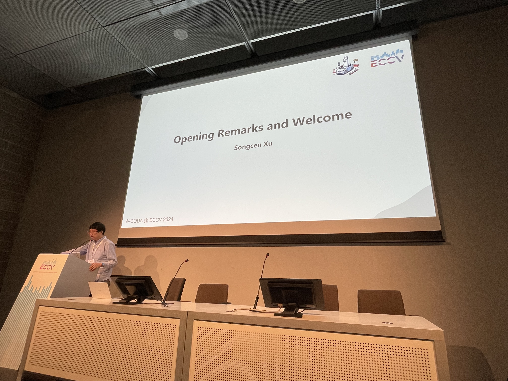
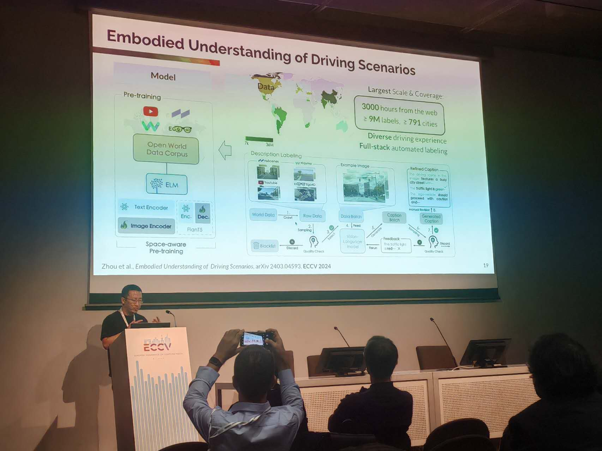

Multimodal Perception and Comprehension of Corner Cases in Autonomous Driving
ECCV 2024 Workshop @ Milano, Italy, Sep 30th Monday


ECCV 2024 W-CODA posters.

Opening host by Prof. Xu Jia (DUT).

Opening Remarks and Welcome by Dr. Songcen Xu (Huawei).
Vision-based End-to-end Driving by Imitation Learning by Prof. Antonio M. López (UAB).

Reasoning Multi-Agent Behavioral Topology for Interactive Autonomous Driving by Prof. Hongyang Li (HKU).
Simulating and Benchmarking Self-Driving Cars by Prof. Andreas Geiger (University of Tübingen).
Long-tail Scenario Generation for Autonomous Driving with World Models by Dr. Lorenzo Bertoni (Wayve).

Industrial Talk on Autonomous Driving by Dr. Chufeng Tang (Huawei).


Challenge Summary & Organizer Post-credits by Dr. Kai Chen (HKUST).


Challenge Awards by Dr. Songcen Xu and Ms. Wenhua Sun (Huawei).